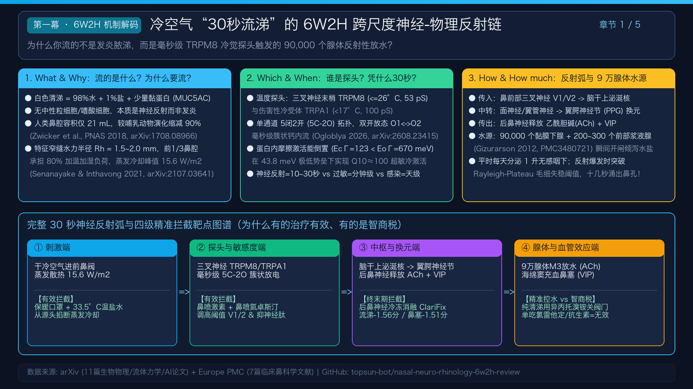

为什么冷空气进鼻腔不到 30 秒就能触发清涕喷涌？为什么慢性鼻窦炎患者每 2 小时鼻腔就被“果冻状拉丝黏涕”填满，且在冬季冷空气下剧烈恶化？本项目对 18 篇跨学科权威论文 执行了严格的 十遍（十维）精读，打通了从宏观狭缝热湿传递（Zwicker PNAS 2018）、内鼻阀蒸发冷却（Inthavong 2021）、TRPM8 5C-2O 毫秒门控与蛋白内摩擦（Zholos 2026; Moskvin 2021）、气道黏液微流变与毛细失稳（Berret 2021; Hazra & Picardo 2025），到翼腭神经节-后鼻神经冷冻消融（ClariFix Meta-Analysis 2024）的完整证据链。
包含 6W2H 神经反射链、18篇论文十遍精读矩阵、TRPM8与黏液失稳物理曲线、行业突破点及张益新四阶梯诊疗方案
提示：点击播放按钮即可收听完整五幕中文配音综述；右侧可切换浏览 5 张 1920×1080 高清学术图谱。

当前展示：第一幕：6W2H 30秒流涕神经反射链
点击下方按钮，查看每一个环节的生物物理控制方程、解剖结构、时间尺度及对应的 arXiv / Europe PMC 论文实证
基于 P01–P04 (Zwicker 2018, Inthavong 2021, Okenov 2021) 与 P07–P10 (Radiom 2021, Hazra & Picardo 2025) 数学物理方程实时计算
体验吸入空气温度、炎症阈值漂移与口罩防护如何调控三叉神经冷觉探头放电与 30 秒流涕爆发风险。
定量验证为什么“猛擤鼻子 (0.5s)”只会导致弹性回弹伤耳，以及为什么每 120 分钟果冻涕会准时封死狭窄鼻道。
完整呈现 18 篇核心论文分类体系、6W2H 跨尺度反射弧与张益新“双轨叠加型”诊断治疗闭环
mindmap root((冷空气30秒流涕与双轨鼻炎
18篇论文十遍精读总纲)) 6W2H 神经反射机制 What 98%水+盐+少量MUC5AC, 无炎细胞 Why 人类鼻腔21cm³缩减90%, 前1/3承担80%加温加湿 Which TRPM8/TRPA1探头 + 翼腭神经节 + 9万浆液腺 + 海绵窦 How 三叉神经V1/V2 → 上泌涎核 → 翼腭神经节 → ACh+VIP When 5C-2O毫秒级门控 + 内摩擦倒置 Q10=100 → 10-30秒出水 How much 日分泌1L无感, 突破Rayleigh-Plateau阈值即刻外溢 18篇跨学科文献库 生物物理与CFD (P01 Zwicker PNAS, P02 Inthavong, P12 D'Amato) TRP通道电生理与统计物理 (P03 Zholos, P04 Moskvin, P05 Heimburg, P06 Maaroufi) 黏液微流变与薄膜失稳 (P07 Liu, P08/P09 Hazra & Picardo, P10 Berret) 临床鼻科学与神经消融 (P11 Gelardi AI, P13/P14 Kaliner, P15 Gizurarson, P16-P18 ClariFix) 八大行业突破点 B01 数字孪生CFD手术导航防空鼻症 B02 手机显微+YOLOv8鼻细胞学1分钟分型 B03 状态依赖性TRPM8双开态变构调节剂 B04 5微升磁线微流变芯片与二硫键破胶伴侣 B05 33.5°C恒温跨40s弛豫时间闭环洗鼻器 B06 呼气闭合正压(EDS)低Stokes数嗅裂靶向给药 B07 神经阻抗导航多点位PNN冷冻/射频消融 B08 神经-免疫双轨同步拆解联合方案 张益新20年双轨诊疗方案 A轨底盘：双侧上颌窦/左筛窦炎 + 左嗅裂荔肉样突起 + 2h果冻涕 B轨放大器：左利特尔区糜烂 + 冬季冷空气TRPM8秒级锁死 4项必查：鼻涂片EOS+血EOS/IgE + 上后牙CBCT + CT骨窗复盘 + 声导抗 4阶梯治疗：33.5°C洗鼻60s → 氮卓斯汀+内舒拿(满12周) + 桉柠蒎 → 复查内镜
支持按学科集群筛选与关键词检索，点击每篇论文底部的“展开十遍精读详情”可查看完整 10 维分析
从经验医学迈向计算生物物理、软物质流变学与闭环神经调控的产业路线图
依据 P01 (Zwicker PNAS) 与 P02 (Inthavong)，以恢复水力半径 Rh = 1.5–2.0 mm 均匀窄缝与前鼻阀 12–16 W/m² 生理冷却热通量为目标函数，彻底终结下鼻甲过度切除导致的“空鼻综合征 (ENS)”。
依据 P11 (Camporeale & Gelardi 2024)，自动检测嗜酸性粒细胞、中性粒细胞、肥大细胞、杯状细胞及超微条纹 HSS，在门诊 60 秒内精准区分纯神经反射清涕、2型炎症 (NARES/eCRS) 与细菌感染。
依据 P03 (Zholos 2026) 与 P04 (Moskvin 2021)，设计仅抑制 O₁↔O₂ 高频簇状放电而不阻断基础单开放态的局部鼻喷小分子，将病理性漂移的半激活电压 V₁/₂ 回调 4–6°C。
依据 P07 与 P10 (Radiom & Berret 2021)，片上快速测定储能模量 G' 与屈服应力 τy，指导二硫键裂解与钙螯合微球精准化解体外高弹性果冻涕。
严格避开 ≤26°C 的 TRPM8 激活区，并以单侧 ≥45–60 秒温和连续流跨越果冻涕应力弛豫时间 (τR ≈ 20–40 s)，杜绝弹性回弹与咽鼓管逆流。
依据 P09 (Hazra & Picardo JFM 2025)，利用吹气触发软腭封闭鼻咽并输送 15–25 μm 低惯性药雾绕过前鼻阀，使左嗅裂与筛窦口药物沉积率提升 3–5 倍。
依据 P16–P18 (472例 Meta 分析)，高频阻抗谱识别蝶腭孔主干与中鼻道副支，门诊局麻消融实现流涕 (-1.56分) 与鼻塞 (-1.51分) 长效消除且零干眼症。
打破慢性鼻窦炎与非过敏性鼻病分治壁垒，用“恒温洗鼻 + 鼻用激素 + 氮卓斯汀 + 桉柠蒎”四联同步拆解正反馈环。
现有 CFD 均假设鼻腔壁面刚性不变。亟需建立耦合“气流冷却 → TRPM8 放电 → VIP 释放 → 鼻甲海绵体动态充血缩窄流道 (Rh↓)”的四维动网格方程组。
亟需研发门诊内镜下微电极三叉神经黏膜诱发电位仪，在体定量患者鼻中隔糜烂区与下鼻甲前端的真实冷激活势垒偏移量 (meV)。
将非牛顿屈服应力 τy 与长弛豫时间 τR 代入 Hazra-Picardo 薄膜毛细失稳方程，求解窦口鼻道复合体 (OMC) 周期性堵塞的精确相图。
建立基于患者初始黏液储能模量 G'₀ 的“最优部分 M3 受体占有率控制方程”，既削减冷风秒级流水洪峰，又绝不造成果冻涕脱水结痂。
量化早期嗅裂水肿/荔肉样突起（如张益新左嗅裂病变）在足疗程激素抗炎下的组织重塑动力学与手术介入临界点。
结合 AI 鼻涂片细胞学、鼻呼出气一氧化氮 (FnNO)、夏科-莱登结晶与牙科 CBCT 根尖三维重建，消除 20–30% 隐匿性牙源性鼻窦炎漏诊。
阐明冷冻消融后沿神经外膜再生的新生轴突为何高敏性降低，并探索冬季按需开启抑制、夏季关闭的毫米级可逆神经调控注射电极。
将当地实时温湿度转化为鼻黏膜冷却热通量预警，指导患者在寒潮出门前 15 分钟完成预防性护鼻与给药闭环。
基于 2024 MRI、2025.11.15 同济医院鼻窦 CT 与高清鼻内镜客观证据及 18 篇论文的个体化转化方案
科学依据 (P11, P13)：你有“激素药膏秒效型肛周湿疹”病史及“左嗅裂荔肉样光滑突起”。若鼻涂片嗜酸性粒细胞 >5–10% 或血 EOS# ≥0.25×10⁹/L，即确诊为 2型嗜酸性慢性鼻窦炎 (eCRS/NARES)，预示足量鼻喷激素（内舒拿）对你的左嗅裂突起具有极高消退率！
科学依据 (P07, P11)：你有“早年耳痛确诊为牙齿牵涉痛 + 现口臭 + 刷牙出血 + 上后牙黑锈色牙结石”。20–30% 的顽固上颌窦黄白黏涕源于上磨牙根尖微感染穿透上颌窦底壁！查清并洗牙/治牙可大幅减轻上颌窦脓性底盘。
科学依据 (P01, P02)：重点确认双侧窦口鼻道复合体 (OMC) 骨性狭缝是否 <1.5 mm、上颌窦内有无真菌球微钙化点及窦底牙根骨板完整性。
科学依据 (P10, P15)：客观评估 20 年鼻咽部黏膜充血及既往用力猛擤鼻是否导致中耳负压（C型曲线）。
⚠️ 终身用药红线：绝对禁用左氧氟沙星、莫西沙星等一切喹诺酮类抗生素（过敏及严重便秘禁忌）！
物理铁律 (P03, P08, P10)：① 水温严格锁定在 32–35°C（冷水 <25°C 会激活 TRPM8 越洗越肿）；② 单侧温和持续冲洗 ≥45–60 秒（必须大于果冻涕弛豫时间 τR ≈ 20–40 s 才能使其粘性滑出）；③ 严禁双侧用力猛擤鼻与挖鼻；④ 冬季冷风出门必戴保暖口罩；左利特尔区糜烂点浅涂医用透明质酸钠凝胶护创。
药理与流体铁律 (P09, P14, P15)：
① 先洗鼻削平黏液脊 (P09)：不洗鼻直接喷药，85% 药滴会被前鼻腔果冻涕隆起拦截白白流走！
② 爱赛平（盐酸氮卓斯汀鼻喷）：早晚洗鼻后每侧 1 喷，直接抑制翼腭神经节 VIP 释放并脱敏 TRPM8 冷反射，止住鼻后滴漏。
③ 内舒拿（糠酸莫米松鼻喷）：每侧 2 喷（连续满 12 周），消除左嗅裂荔肉样突起与鼻窦水肿。【防出血角度】左手喷右鼻、右手喷左鼻朝同侧外眼角，绝不喷向鼻中隔左利特尔区！喷后低头前倾 30 秒让药液浸润嗅裂顶壁。
④ 切诺（桉柠蒎肠溶胶囊）：前 2–4 周餐前 30 分钟凉温水整粒吞服，稀释底层 PCL 水层，把 2 小时果冻涕失稳周期拉长至全天无感。
⑤ 异丙托溴铵使用法则：平时果冻涕期禁用单药（防脱水结痂）！仅在冬日寒风出门前 15 分钟按需加喷拦截清水涕。
满 12 周复查高清鼻内镜评估左嗅裂突起消退情况。若保守治疗后果冻涕消退但冬季冷反射仍顽固，可行门诊局麻后鼻神经冷冻消融 (ClariFix, P18)；若左嗅裂真性息肉或骨性窦口极窄残留，行保留鼻甲体积 (维持 Rh ≈ 1.5–2 mm) 的微创导航 FESS + 高选择性后鼻神经阻断。